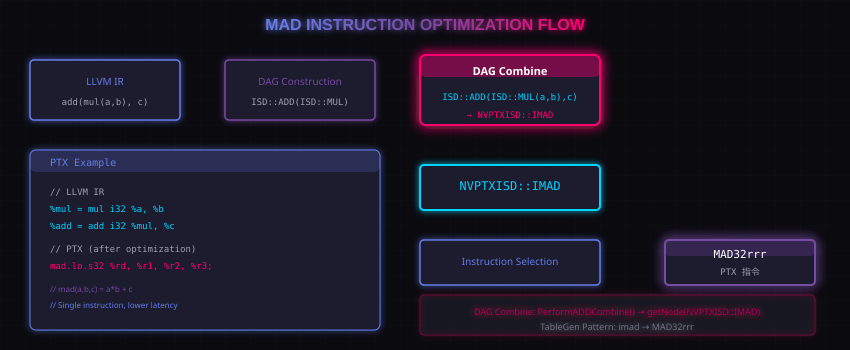

11. 示例：为 PTX 支持 mad 指令
本节用一个完整实战示例，演示如何为 PTX 目标添加对 mad 指令的支持。
11.1 什么是 MAD？
MAD（全称 multiply-add）是一条指令同时完成乘法和加法：
mad(a, b, c) = a * b + c
在 GPU 上，mad 是很重要的指令，因为：
- 单条指令完成乘加，延迟更低
- 适合 many-core 并行执行
- 广泛用于矩阵运算、向量运算

配图：MAD 优化流程图
11.2 从 IR 到 PTX
假设有如下 LLVM IR：
%mul = mul i32 %a, %b %add = add i32 %mul, %c
经过 SelectionDAG 优化后，可能变成一条 MAD 指令：
mad.lo.s32 %rd, %r1, %r2, %r3; // %rd = %r1 * %r2 + %r3
11.3 实现步骤
要支持 MAD，需要：
- 定义 ISD 节点：在 NVPTX ISD 命名空间定义 IMAD 节点
- 注册模式：在 TableGen 中定义 mul+add → imad 的匹配模式
- 实现 Lower：实现 LowerOperation hook，处理 Custom 情况
- DAG Combine：实现 PerformADDCombine，把 mul+add 合并成 IMAD
11.4 核心代码
关键是在 DAG Combine 阶段识别模式：
static SDValue PerformADDCombine(SDNode *N, ...){
// 检查是否是 add(mul(a,b), c)
if (N.getOpcode() == ISD::ADD &&
N.getOperand(0).getOpcode() == ISD::MUL) {
// 检查是否可以用 MAD 指令
if (TLI.isOperationLegal(ISD::IMAD, VT))
return DAG.getNode(NVPTXISD::IMAD, dl, VT,
N.getOperand(0).getOperand(0),
N.getOperand(0).getOperand(1),
N.getOperand(1));
}
return SDValue();
}
11.5 PTX 代码生成
TableGen pattern 看起来像：
def IMAD : Pat<(add (mul i32:$a, i32:$b), i32:$c),
(MAD32rrr $a, $b, $c)>;